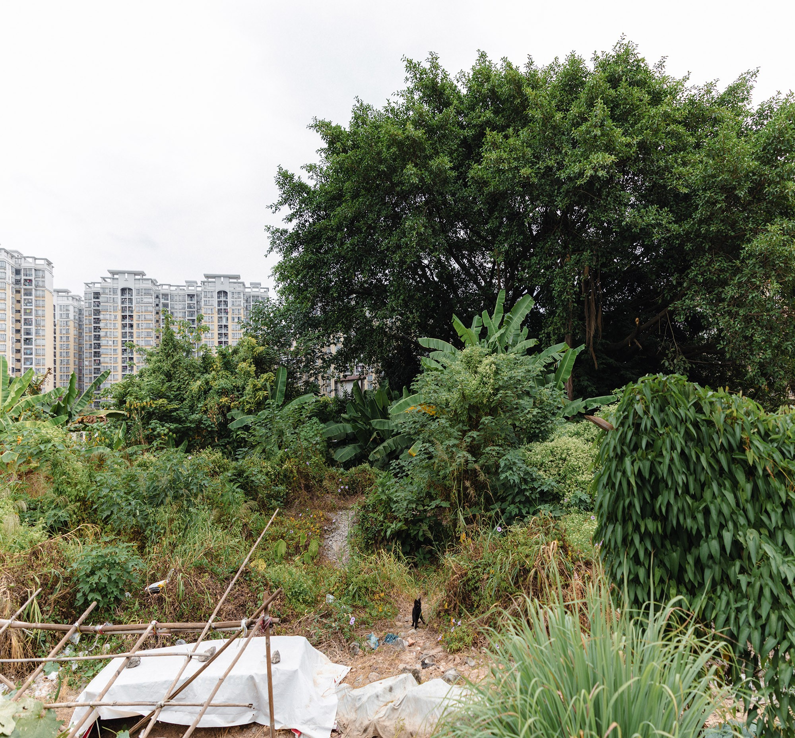
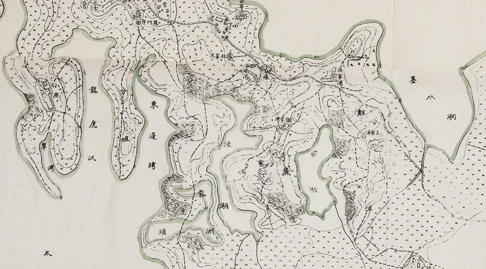
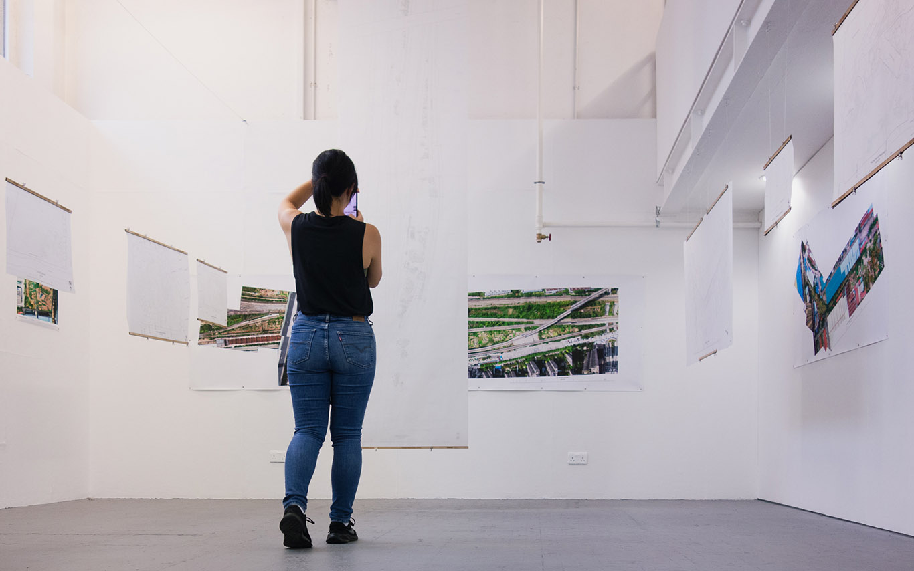
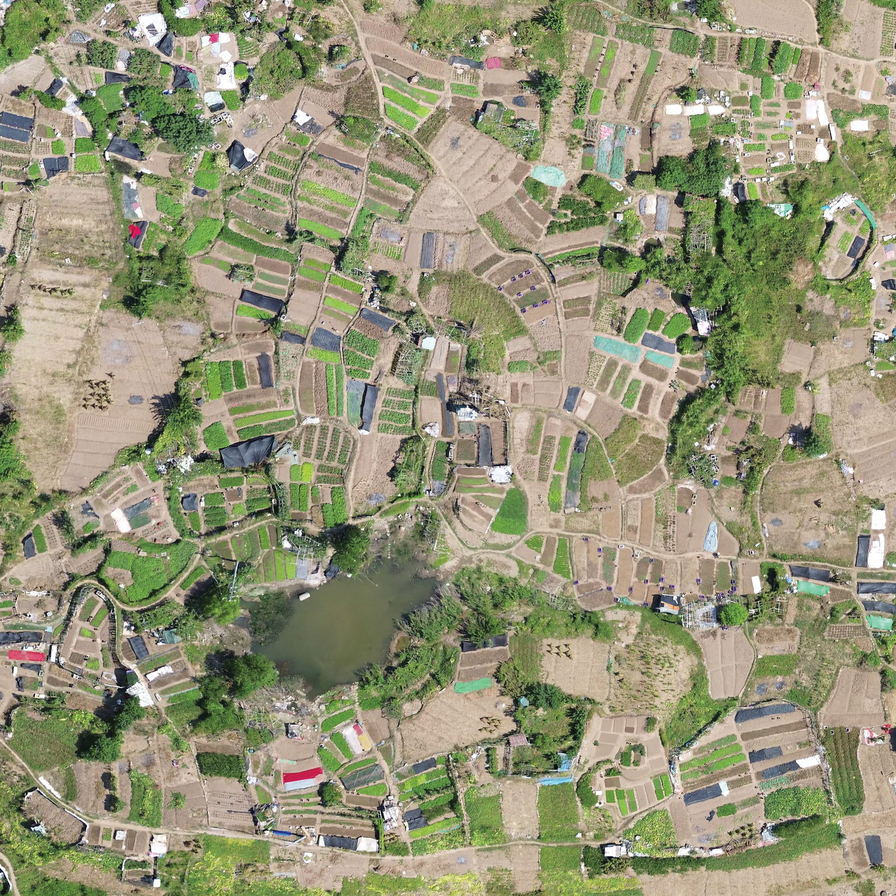
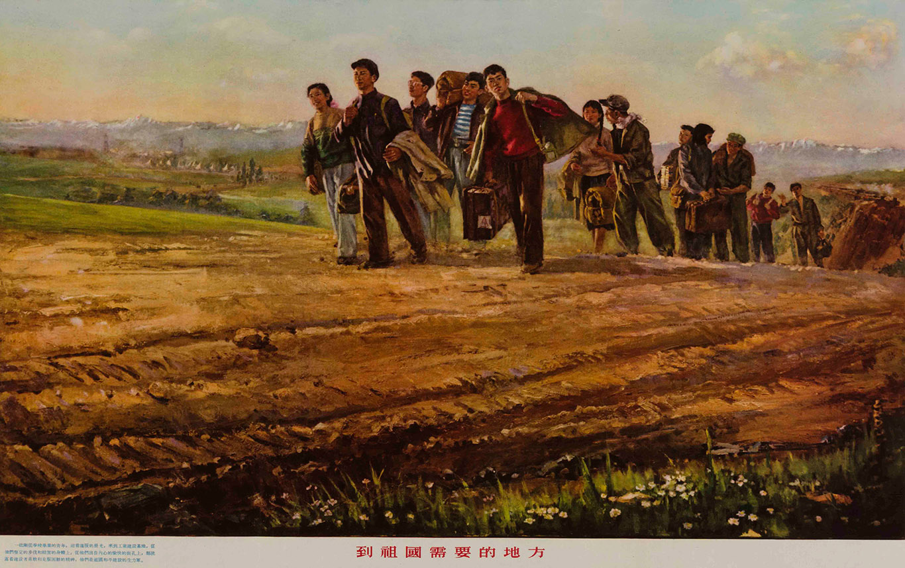
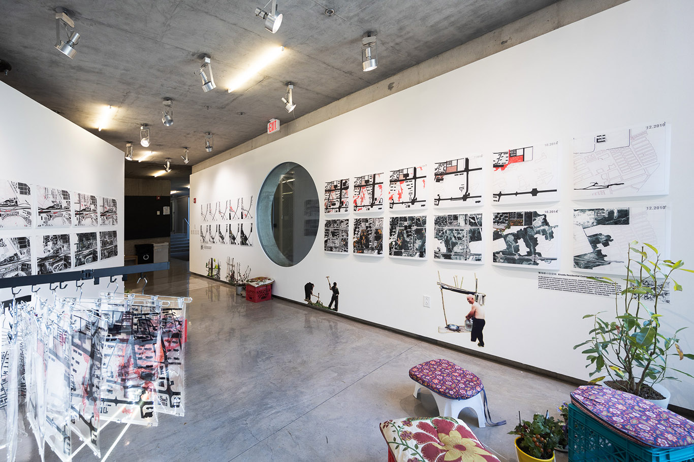
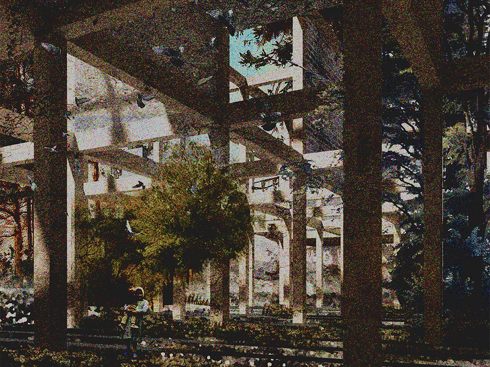
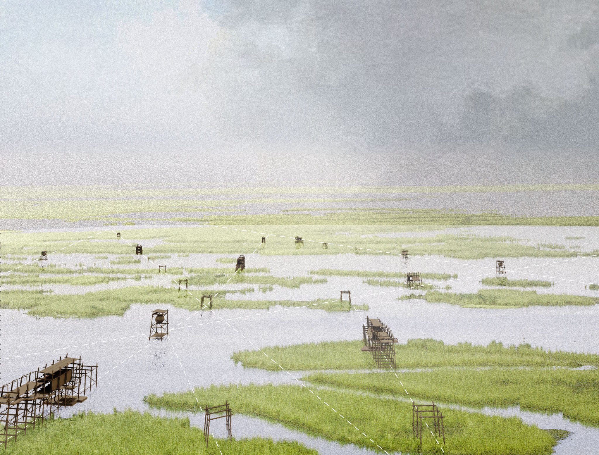
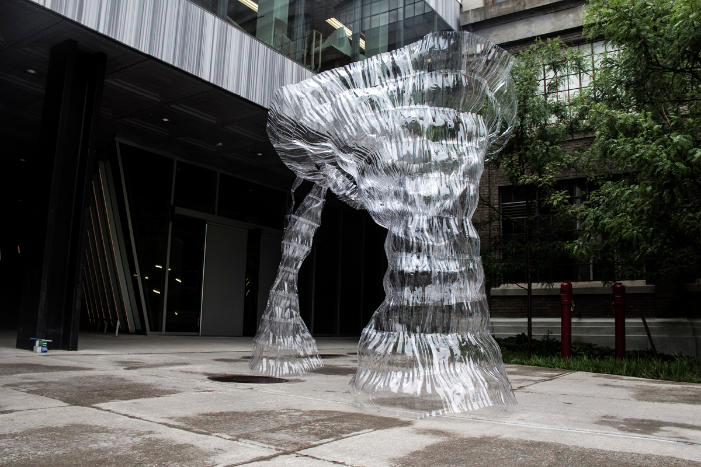
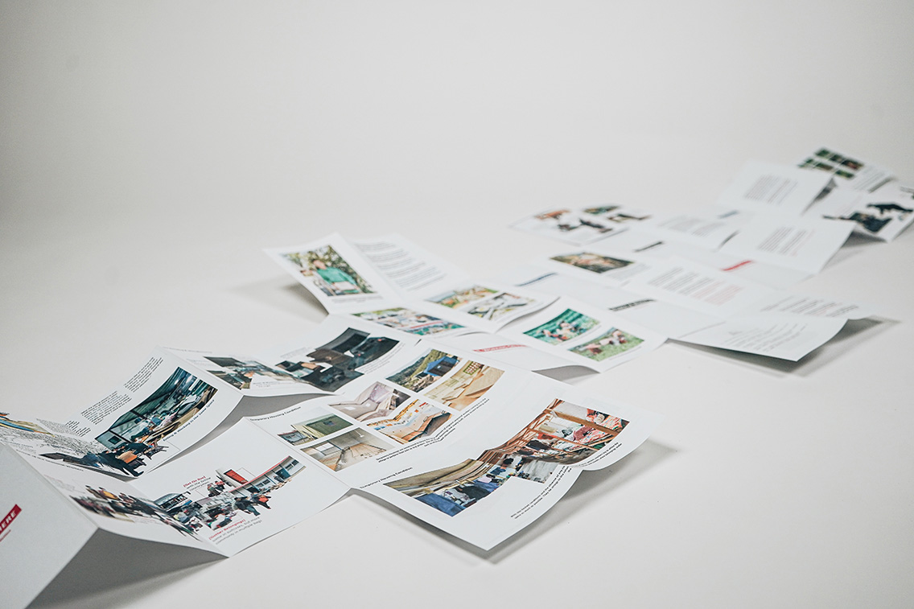

> 王涵晰 | hanxi.wang

Born and raised in Tianjin, China, with practice, research and teaching experiences across North America, Europe, and Asia, I am an architect, urban geographer, and designer whose work has been funded by institutions such as the UK Research and Innovation Economic and Social Research Council (UKRI ESRC) and the European Space Agency (ESA).
I am a licensed architect in the state of New York and a LEED accredited professional in sustainable design. I earned my B.Arch. at Cornell University, M.Sc. in Nature, Society and Environmental Governance at the University of Oxford, and am currently completing my PhD in Human Geography at University College London.
LinkedIn hanxi.wang.22@ucl.ac.uk> RESEARCH | 研究

From my UKRI ESRC-funded doctoral research in Human Geography at University College London to postgraduate research in the MSc of Nature, Society and Environmental Governance at the University of Oxford, I have been interested in how spatial practices mediate the relationships between humans and environments. Against dominant narratives of spatial power and agency, which has primarily focused on archetypal modes of top-down governance and bottom-up resistance, my research has investigated the more ambiguous and elusive "middle grounds" inbetween binaries (e.g. urban vs rural, formal vs informal) that are created by the everyday negotiations, adaptations, and opportunistic interventions of ordinary people. Developing custom transdisciplinary methodologies, I examine the cumulative effects of apparently small practices at the macro-scale of cities and the multi-layered temporalities that inform the emergence of such practices. Currently, my primary subject of research is 开荒 [kāi-huāng], a practice of wasteland vegetable cultivation that takes place without organization or support upon the empty gaplands and vacant lots of Chinese megacities. Through analysis of remote sensing, social media, and ethnographic data, the project examines the rural-urban spatialities kaihuang fosters across the urban landscape and the alternative futures that may be possible if their agency is embraced by urban planning. This research has been exhibited and presented internationally, as well as published in high-impact journals such as Nature Cities, Antipode, and Landscape Research.
As an inaugural Design Teaching Fellow in Architecture at Cornell University, my research on urban ruralization was exhibited at the Bibliowicz Family Gallery and coordinated the annual Preston Thomas Memorial Symposium and Exhibition FRINGE: New Centers for Architecture and Urbanism on the theme of rural-urban innovation with Assistant Professor Leslie Lok
PUBLICATIONS
Ruralising Urbanisation Agro-Urban Duality in Temporal Landscapes of Rapid Urbanization The Role of Informal Ruralization HOME-steading
EXHIBITIONS
Urbs Vegetabilis Cities Gone Wild
> DESIGN | 设计

Having accumulated over 4 years of practice experience in architectural design at leading international firms in the US, UK, and Japan including Skidmore, Owings, and Merrill, NADAAA, Grimshaw Architects, and junya ishigami + associates, I earned my NY state licensure while working in Studio X (the tall buildings studio) at FXCollaborative Architects, where I also served as the Sustainability Expert on multiple LEED-certified projects across the firm, including multi-million-dollar flagship projects such as 3 Hudson Boulevard and 495 11th Ave. Beyond professional practice, my academic projects are informed by a fundamental interest in how design can facilitate agency and harmonious relationships between people and their environments. These works have been included in the Archdaily Best Student Work Worldwide, Rethinking the Future's Best Temporary Structures, and the Finalist proposals for the UN Permanent Slavery Memorial International Design Competition.
PROFESSIONAL WORKS 495 11th Ave 3 Hudson Boulevard
ACADEMIC PROJECTS Breaking into Silence The Wetland Guardians of Jean-Lafitte Fluid Pavilion
> TEACHING | 教学

Having developed a passion for teaching during my B.Arch degree, I continued to take on mentoring and teaching roles as my career developed in professional practice and in human geography. The wide range of multidisciplinary skills I have accumulated has allowed me to teach architectural design, critical theory, and remote sensing analysis in multiple institutes and departments in the US, the UK and India. Between 2022 and 2023, I served as one of the inaugural Design Teaching Fellows in the Department of Architecture, Art, and Plannin at, Cornell University, where I was studio instructor for the First Year Core Design Studios in the B.Arch programme and led my own seminar in architectural theory and architecture, culture and society for postgraduate students and advanced undergraduate students. I have also served as Postgraduate Teaching Assistant in CASA0023 Remotely Sensing Cities and Environments at the UCL Bartlett Centre for Advanced Spatial Analysis in 2024 and was invited to teach remote sensing in the M.Arch Landscape Architecture studio at Anna University, Chennai, India in summer 2026.
ARCH 3308/3408/6308/6408 City, Subversive ARCH 1101/1102 Geologies of Making + Reconfigurations
Ruralizing Urbanization:
In two of China’s largest megacities, Guangzhou and Wuhan, apparently ordinary individuals are deciding – independently, without organization, support or legal rights – to appropriate empty lands and transform them into cultivation landscapes in a practice called kāihuāng (“wasteland opening”). While each individual kāihuāng may be small, mapping using remote sensing data reveals emergent patterns of ‘agrarianisation’ formed through hundreds of disparate yet convergent practices across the urban landscapes. Triangulating field observations and interviews across 120 sites of kāihuāng with historical research, institutional records and archival materials, this study develops a spatial typology of kāihuāng’s appropriations of urban landscapes and examines the agrarian logics they exercise. Through kāihuāng, the paper examines the continued agency of agrarian logics within contemporary urbanity and how they inform the accumulated actions of disparate individuals to engender legible spatial transformations outside of formal institutions.
PUBLICATION
2026, Peer-reviewed research article published in Landscape Research
Agro-Urban Duality in Temporal Landscapes of Rapid Urbanization: A Diffractive Reading of Wuhan Through Emergent Practices of Kāihuāng
The modern enclosure and expropriation of rural land have produced urban landscapes in which the antecedent agrarian and natural landscapes are almost completely illegible. Yet, even as the world appears increasingly urbanized, rural entities and processes do not simply disappear. Examining agrarian-urban landscapes created in the core urban districts of the Chinese megacity Wuhan by a practice called kāihuāng (Mandarin, “opening wasteland”) – where ordinary residents without organization or permission appropriate urban ‘wastelands’ for vegetable cultivation – this article argues that urbanization’s erasure of rural and natural landscapes is never complete. Leveraging Karan Barad’s notion of temporal diffraction and feminist theorizations of intra-action and entanglements, this paper draws on in-depth interviews, field observations, time-series geospatial analysis and historical materials to present an account of urbanization, not as a linear supersession of rurality by urbanity, but a diffractive superposition of rural and urban temporalities that co-exist within the contemporary urban landscape.
EXHIBITION
2026, Exhibition held at the Slade School of Fine Arts, UCL, London, UK
Urbs Vegetabilis - City, Enlivened
Presenting ethnographic data collected at over 100 hidden-in-plain-sight sites of kaihuang across Guangzhou and Wuhan, along with drone photography and mapping drawings, the exhibition aimed to evidence the everyday, yet stunningly creative ways in which ordinary people make rurality an intimate part of modern urbanity. Paying particular attention to the quotidian moments, spaces, and contexts in which formal boundaries between the rural and the urban are crossed, subverted, or made invisible, this exhibition presents a narrative of the simultaneously ordinary and extraordinary “rural-urbanity” that persists and thrives in the city.
PUBLICATION
2024, Peer-reviewed research article published in Nature Cities
The Role of Informal Ruralization Within China’s Rapid Urbanization
Presenting ethnographic data collected at over 100 hidden-in-plain-sight sites of kaihuang across Guangzhou and Wuhan, along with drone photography and mapping drawings, the exhibition aimed to evidence the everyday, yet stunningly creative ways in which ordinary people make rurality an intimate part of modern urbanity. Paying particular attention to the quotidian moments, spaces, and contexts in which formal boundaries between the rural and the urban are crossed, subverted, or made invisible, this exhibition presents a narrative of the simultaneously ordinary and extraordinary “rural-urbanity” that persists and thrives in the city.
PUBLICATION
2023, Peer-reviewed research article published in Critic|all conference proceedings
HOME-steading: Subversions, Reversions, and Diversions of the Moral Right to Space
Presenting ethnographic data collected at over 100 hidden-in-plain-sight sites of kaihuang across Guangzhou and Wuhan, along with drone photography and mapping drawings, the exhibition aimed to evidence the everyday, yet stunningly creative ways in which ordinary people make rurality an intimate part of modern urbanity. Paying particular attention to the quotidian moments, spaces, and contexts in which formal boundaries between the rural and the urban are crossed, subverted, or made invisible, this exhibition presents a narrative of the simultaneously ordinary and extraordinary “rural-urbanity” that persists and thrives in the city.
EXHIBITION
2023, Exhibition held at the Bibliowicz Family Gallery, Cornell University, Ithaca, NY, USA
Cities Gone Wild: Understanding Urban Homesteads Through Remote Sensing
Through remote sensing analysis of chengshi kaihuang ("urban homesteading"), this study demonstrates that the massive urbanisation of the rural can create a bottom-up countermovement of ruralization. Taking Wuhan as the study area, this study the first to leverage hyperspectral remote sensing data from the Sentinel-2 and Landsat-8 missions in conjunction with machine learning algorithms to study the spatial, temporal, and ecological dynamics of urban homesteading. The study shows that urban homesteading has constituted ~5% of Wuhan’s urban center since 2017.
Breaking into Silence
College of Architecture, Art, and Planning, Cornell UniversityThere is a story that seem to emerge time and time again within contemporary narratives of crises - where severe lack and severe excess exist paradoxically at the same time. Waste, one of the most dire issues of our time, is marked by this paradox. From food deserts to homelessness, crises of waste frequently originate from the inequitable distribution of resources rooted in underlying social prejudice and discrimination. This dissertation examines the entanglements between three parallel crises, urban dereliction, immigration, and landfill, in a small town called Skive in Mid Jutland, Denmark and proposes an alternative model of urban agency and spacemaking that may modulate the existing entanglements between these three issues from vicious to virtuous.

The Wetland Guardians
of Jean-Lafitte
College of Architecture, Art, and Planning, Cornell UniversityFrom its location at the mouth of the Mississippi River on the US south coast, New Orleans has always been at risk of the devastation caused by hurricanes and cyclones. However within the last century, the erosion of coastal wetlands due to human interference has dramatically increased New Orleans's vulnerability to storms and flooding. In a site where human construction, from levees to oil canals, has nearly decimated the natural ecosystem, this proposal asks how can we rethink the act of construction to not only limit its damage but to enable acts of care between human communities and the environment.

Fluid Pavilion
College of Architecture, Art, and Planning, Cornell UniversityDesigned with only 3 unit types, this experimental pavilion constructed from 213 individual PETG components explores the potential of thermoforming as a structural mechanism that can program memory, elasticity and strength into ordinary sheet plastic. By carefully embedding different types of 3D curvatures into sheet plastic, we were able to calibrate a spectrum of structural properties that made it possible to construct a 8’ tall pavilion from 0.75mm PETG sheets that is simultaneously rigid and fluid.
Published in 2015 Archdaily Best Student Works Worldwide, Rethinking the Future Best Temporary Structures, and Resoluciones Constructivas No Convencionales

City, Subversive
ARCH3308/3408/6308/6408 Architecture Culture and Society+ Theory Seminar at Cornell University
As a profession that has historically been enamored with grand gestures and celebrations of singular figures of genius, architecture is undergoing a drastic shift towards broader community engagement and more inclusive forms of space-making. Yet, in order to create real, radical change and avoid the traps of superficial marketing strategies, it is crucial to take seriously the potential and agency of marginalized, overlooked communities and individuals and understand their existing influence and contributions in creating the urban environment. The goal of the seminar is to learn to understand the city through currently marginalized perspectives, opening up to subaltern, queer, more-than-human, senescent, minor, and other potentially “hidden” ways of understanding the city beyond the dominant academic narrative.

Geologies of Making + Reconfigurations
ARCH1101 + ARCH1102First-Year Architecture Core Design Studios at Cornell University
First-year core design studios in Cornell University's Bachelor of Architecture professional degree program introduces students not only to architectural design but also to the culture of architecture studio, as well as fundamental skills. The first semester studio Geologies of Making aims to challenge students' preconceptions of what architecture is by guiding them to discover form, logic, and composition through observation of geological landforms, exercise abstraction, and creating spatial designs for a visitor's center for said landscape. In the second semester Reconfigurations focuses on the study of regional building traditions to understand how different societies have developed construction techniques and spatial logics to survive and live in harmony with their environment.
.jpeg)